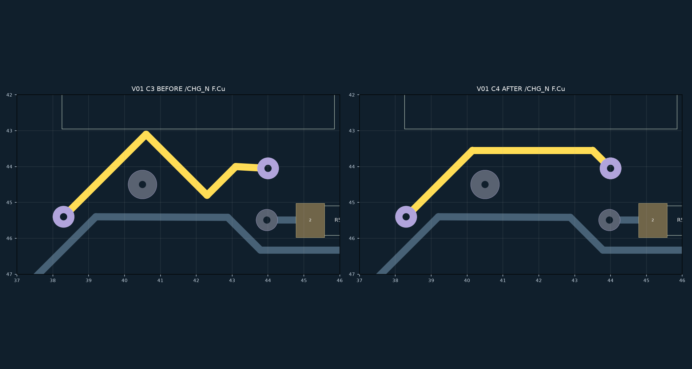
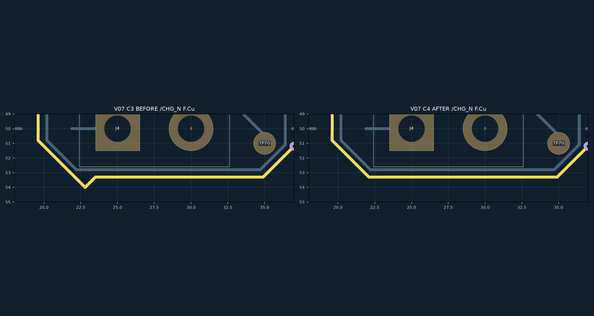
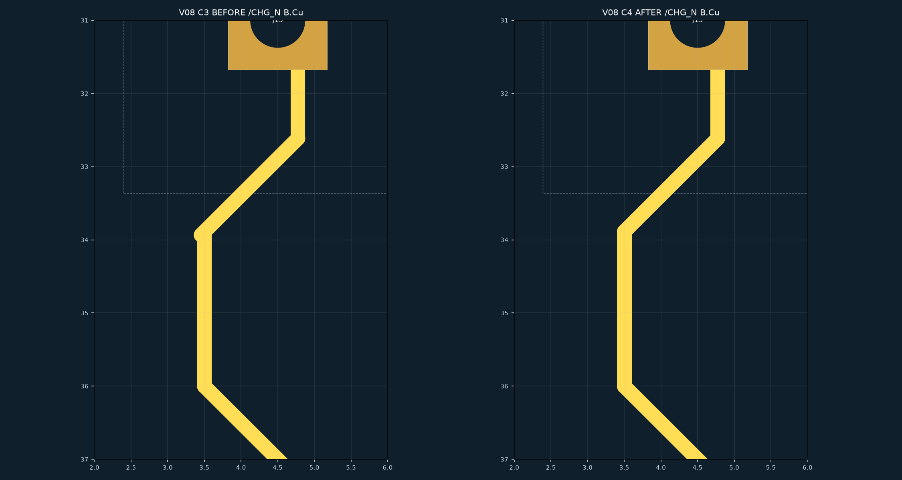
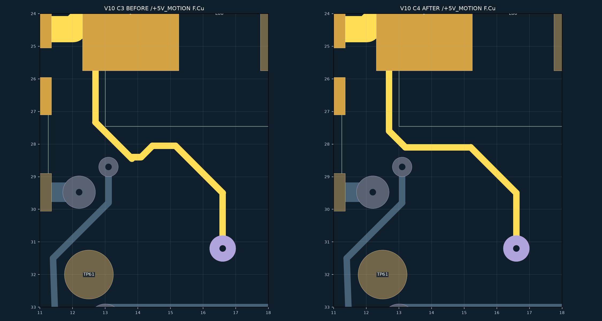
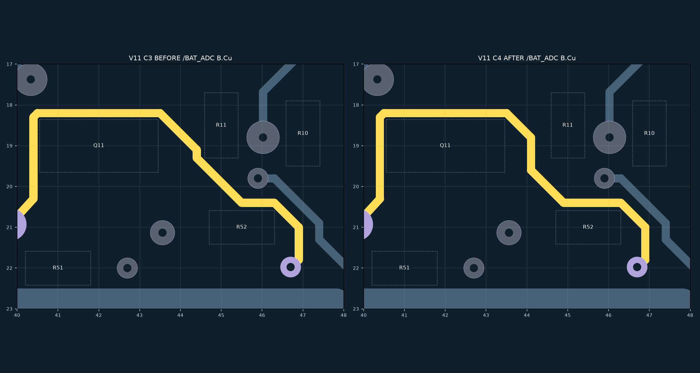
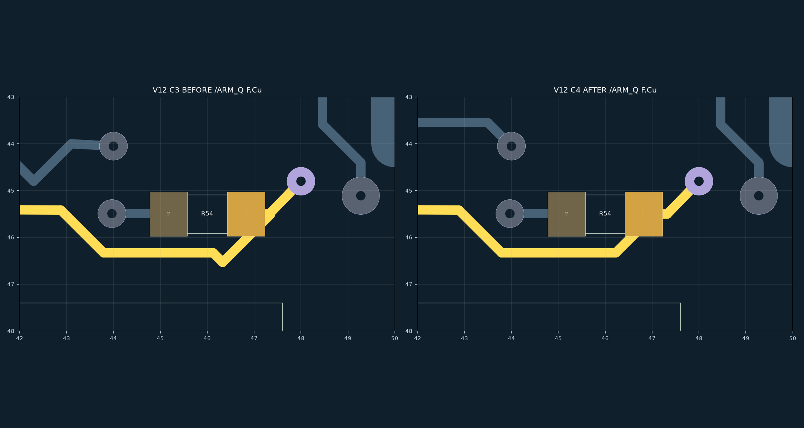

PROTOTYPE · 正式四板未替换
六处局部修改已逐张复看；39 条提示逐项记录。原生 ERC / DRC / 未连接 / 原理图差异 = 0。器件、板框、针序、过孔及功率线宽保持。几何图隐藏铺铜，焊盘圆角显示简化。
完整记录与边界 · 逐项 CSV · 原生检查与范围不变证明






| ID | 网络 | 处置 | 依据 |
|---|---|---|---|
| C0020 | /CHG_N | FIXED | 原 CHG_N 峰谷折返和近水平尾段改为单一横向通道，保持两端过孔。 |
| C0021 | /CHG_N | JUSTIFIED_EXCEPTION | 0.8128 mm 长线仅有 0.0088 mm 横向差，直接连通实际过孔/既有端点；没有来回折返。 |
| C0022 | /CHG_N | FIXED | 原两段末端相差 0.0571 mm，铜虽相连但外缘有小凸出；已改成同一精确端点。 |
| C0032 | /+5V_CAM | JUSTIFIED_EXCEPTION | +5V_CAM 这段直接接入 (31.5976,41.4528) 过孔，未跨器件本体；保留锚点，不增添折点。 |
| C0040 | /BAT_ADC | JUSTIFIED_EXCEPTION | 同一个 0.1×0.1 mm 单向转角被重复提示。位于 Q11 投影左上外缘；放大倒角的 V02 侵入 Q11 禁布区已撤回。它是一次转弯，不是往返抖动。 |
| C0041 | /BAT_ADC | JUSTIFIED_EXCEPTION | 同一个 0.1×0.1 mm 单向转角被重复提示。位于 Q11 投影左上外缘；放大倒角的 V02 侵入 Q11 禁布区已撤回。它是一次转弯，不是往返抖动。 |
| C0042 | /BAT_ADC | FALSE_POSITIVE | R50.2 焊盘内的 0.125 mm 接入线，完全被焊盘铜覆盖；不形成焊盘外抖动或悬空。 |
| C0043 | /BAT_ADC | FALSE_POSITIVE | R50.2 焊盘内的 0.125 mm 接入线，完全被焊盘铜覆盖；不形成焊盘外抖动或悬空。 |
| C0044 | /BAT_ADC | FALSE_POSITIVE | R50.2 焊盘内的 0.125 mm 接入线，完全被焊盘铜覆盖；不形成焊盘外抖动或悬空。 |
| C0045 | /BAT_ADC | JUSTIFIED_EXCEPTION | 直接接入 BAT_ADC 真实过孔 (39.8272,20.9296)，线段微偏离 45°；不新增折点，不改过孔。 |
| C0046 | /BAT_ADC | JUSTIFIED_EXCEPTION | 同一个 0.1×0.1 mm 单向转角被重复提示。位于 Q11 投影左上外缘；放大倒角的 V02 侵入 Q11 禁布区已撤回。它是一次转弯，不是往返抖动。 |
| C0047 | /BAT_ADC | JUSTIFIED_EXCEPTION | 同一个 0.1×0.1 mm 单向转角被重复提示。位于 Q11 投影左上外缘；放大倒角的 V02 侵入 Q11 禁布区已撤回。它是一次转弯，不是往返抖动。 |
| C0048 | /BAT_ADC | FIXED | Q11/R11 之间原 0.2 mm 偏移改成明确的 0.8 mm 竖向通道，绕开两个本体；V03 直接斜穿方案被禁布规则拒绝。 |
| C0049 | /BAT_ADC | JUSTIFIED_EXCEPTION | 短末端直接接入过孔 (46.7,21.975)，偏角位于过孔接入处；无局部往返。 |
| C0051 | /BAT_MON | JUSTIFIED_EXCEPTION | F60 电池采样分支从焊盘向外引出，0.2 mm 是采样支路；负载主路径另由粗铜承担。 |
| C0055 | /BAT_MON | JUSTIFIED_EXCEPTION | F70.1 的接入段由真实焊盘中心 (30.5,34.545) 向外接功率线，1.0 mm 宽保持；不是为过 DRC 缩窄主路。 |
| C0056 | /BAT_MON | JUSTIFIED_EXCEPTION | BAT_MON 主干到分支的连续宽铜，网格差使斜率稍偏离 45°；连接角和本体净空经原生规则检查，未额外绕行。 |
| C0057 | /BAT_MON | JUSTIFIED_EXCEPTION | J4.2 的宽铜末端接入实际连接器位置，微偏离 45°，连贯无折回；保留原连接器与支路宽度。 |
| C0058 | /BAT_MON | FALSE_POSITIVE | 0.1414 mm 小段及相邻端点均被 (13,33.4) 同网过孔铜覆盖；没有裸露的细颈或小绕路。 |
| C0059 | /BAT_MON | FALSE_POSITIVE | 0.1414 mm 小段及相邻端点均被 (13,33.4) 同网过孔铜覆盖；没有裸露的细颈或小绕路。 |
| C0060 | /BAT_MON | JUSTIFIED_EXCEPTION | R50.1 从真实焊盘向外接 BAT_MON，0.025 mm 横向差来自焊盘中心；保留直接落点。 |
| C0062 | /BAT_MON | FALSE_POSITIVE | 宽铜分支附近相距 0.1016 mm 的同网端点重复命中筛查；原生铜连续，未形成外缘折返或开路。 |
| C0063 | /BAT_MON | FALSE_POSITIVE | 宽铜分支附近相距 0.1016 mm 的同网端点重复命中筛查；原生铜连续，未形成外缘折返或开路。 |
| C0066 | /ARM_Q | JUSTIFIED_EXCEPTION | R54.1 右侧到 (48,44.8) 的线仍为单一直达过孔的微偏斜段；R54 下方真正的 V 形凹口已另由 V12 消除。 |
| C0067 | /ARM_Q | FIXED | R54 旁 0.0266 mm 错位接头和 V 形凹口一并移除，支路改在 R54.1 焊盘内汇合，避免在板外铜线形成 45°锐角三叉。 |
| C0068 | /ARM_Q | FIXED | R54 旁 0.0266 mm 错位接头和 V 形凹口一并移除，支路改在 R54.1 焊盘内汇合，避免在板外铜线形成 45°锐角三叉。 |
| C0069 | /ARM_Q | FALSE_POSITIVE | 0.1414 mm 接入段在 (20.3,46.8) 同网过孔范围内；不是元件间可见折返。 |
| C0070 | /ARM_Q | FALSE_POSITIVE | 0.1414 mm 接入段在 (20.3,46.8) 同网过孔范围内；不是元件间可见折返。 |
| C0071 | /ARM_Q | JUSTIFIED_EXCEPTION | 测试点间一条连续的近竖直线，2.9 mm 长仅偏移 0.1 mm，沿空闲通道且无中间折点。 |
| C0072 | /ARM_Q | JUSTIFIED_EXCEPTION | 3.6752 mm 长直线的两端纵向差 0.0152 mm；没有抖动，不为对齐截图增添新接点。 |
| C0073 | /ARM_Q | JUSTIFIED_EXCEPTION | 直接接入 (12.801599,28.448) 的实际过孔，不改孔位；与邻近器件投影保持分离。 |
| C0074 | /ARM_Q | JUSTIFIED_EXCEPTION | 5.1×5.2 mm 单一直线连两端锚点，约 45.56°；偏斜不等于折返。 |
| C0111 | /C5_VIN | FALSE_POSITIVE | C5_VIN 的两个同网端点在宽铜/过孔落区内重叠，原生铜连续；不是不同网间距或开路。 |
| C0136 | /FAULT_N | JUSTIFIED_EXCEPTION | FAULT_N 直接接入 (66.6242,18.2626) 过孔，斜率由真实锚点决定；无 S 形补偿或穿本体。 |
| C0150 | /M5_EN | JUSTIFIED_EXCEPTION | 同一个 M5_EN 单向 0.1×0.1 mm 转角的重复提示。它沿 R60 右下边缘通过；V05 放大转角会切进 R60 投影，已撤回。保持安静反馈电阻位置，未加往返绕路。 |
| C0151 | /M5_EN | JUSTIFIED_EXCEPTION | 同一个 M5_EN 单向 0.1×0.1 mm 转角的重复提示。它沿 R60 右下边缘通过；V05 放大转角会切进 R60 投影，已撤回。保持安静反馈电阻位置，未加往返绕路。 |
| C0152 | /M5_EN | JUSTIFIED_EXCEPTION | 同一个 M5_EN 单向 0.1×0.1 mm 转角的重复提示。它沿 R60 右下边缘通过；V05 放大转角会切进 R60 投影，已撤回。保持安静反馈电阻位置，未加往返绕路。 |
| C0153 | /M5_EN | JUSTIFIED_EXCEPTION | 同一个 M5_EN 单向 0.1×0.1 mm 转角的重复提示。它沿 R60 右下边缘通过；V05 放大转角会切进 R60 投影，已撤回。保持安静反馈电阻位置，未加往返绕路。 |
| C0154 | /WHEEL_ADC | JUSTIFIED_EXCEPTION | R53.1 向右上方外侧直接引出到固定端点，0.025 mm 斜率差来自真实焊盘；未向电阻内部折回。 |
自身引出例外见 70 条明细；物理装配、温升和运行 NOT_TESTED，制造 BLOCKED。